Miss Mayfield's First-Grade Classroom
After beginning-of-year assessments, Miss Mayfield has identified four groups of students:
Can decode but read slowly; struggle with comprehension questions.
Decode accurately but read word-by-word without expression or speed.
Can blend CVC words but struggle with blends, digraphs, long vowels.
Still working on letter-sound matching and blending into words.
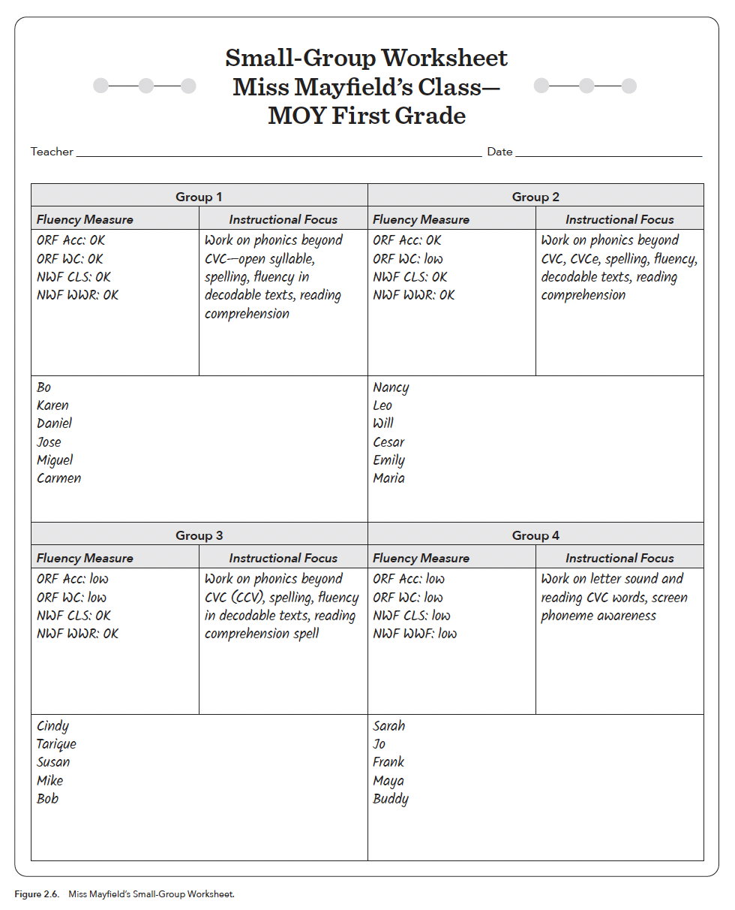
Miss Mayfield will work with Group 3 on consonant blends (bl-, cr-, st-) in a 30-minute lesson.
How would you start this lesson?
Select the activity you'd begin with.
What comes after the teaching?
She's reviewed material and modeled blending. What should happen next? Select all that apply.
What were you drawing on just now?
You made instructional decisions using existing knowledge. Name what guided your thinking.
The choices you just made mirror a research-based framework called Next STEPS. In the next section, you'll learn this framework and apply it to a new scenario.
You now have mental hooks to hang new learning on — and that's the point.
Activity: Build the Lesson
Drag each activity into the lesson slot where it belongs.
The STEPS Framework
Here's how your activity maps to the research-based structure:
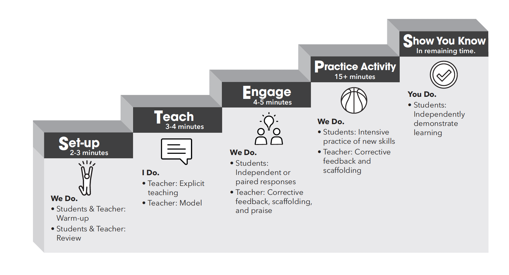
Set-up: We Do
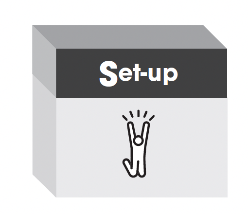
What is it?
A brief primer that activates prior knowledge. Students review familiar material at a high rate of success.
Looks & sounds like
Fast-paced flashcards, oral reading of known words. Students' voices dominate — they know this material.
Teach: I Do
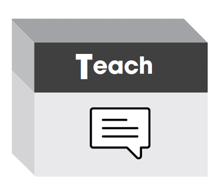
What is it?
Teacher explicitly models the new skill — thinking aloud, demonstrating step by step.
Looks & sounds like
"My turn. Listen. Watch me." Teacher's voice dominates. Scooping under letters, pointing to words.
Engage: We Do
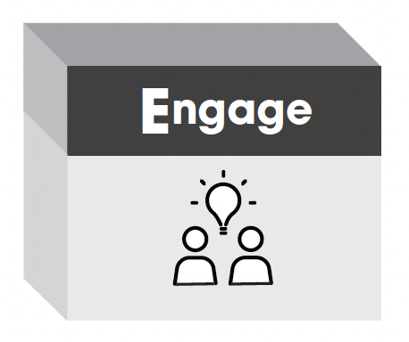
What is it?
Students try the new skill with teacher support. Transition from "I showed you" to "now you try with me."
Looks & sounds like
"Your turn. Sound it out." Students' voices become prominent. Teacher gives corrective feedback.
Practice Activity: We Do
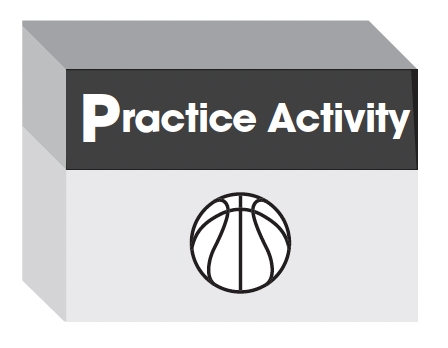
What is it?
Extended, varied practice in multiple contexts — reading, sorting, writing, encoding.
Looks & sounds like
High activity. Teacher circulates, gives corrective feedback and specific praise. Practice makes permanent.
Show You Know: You Do
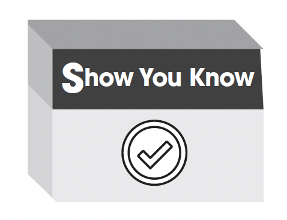
What is it?
Students demonstrate learning independently. Teacher records data: "Did they master this?"
Looks & sounds like
Students read word lists, spell words, produce meanings. Teacher records for tomorrow's planning.
How does STEPS compare to your current practice?
Think about a recent lesson. Which elements were present? Which were missing?
The choices you made in the opening scenario — starting with review, then modeling, then guiding practice — those were STEPS. The difference between intuition and expertise is having a reliable structure you apply every time.
What a STEPS Lesson Plan Looks Like
The book provides two planning tools: a blank template and a completed sample lesson. These give you a concrete starting point for writing your own STEPS lessons.
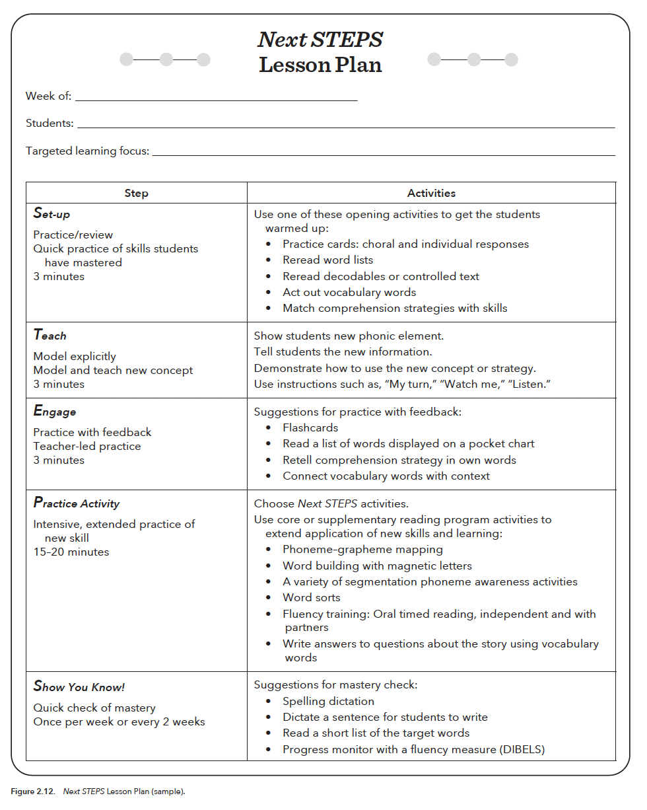
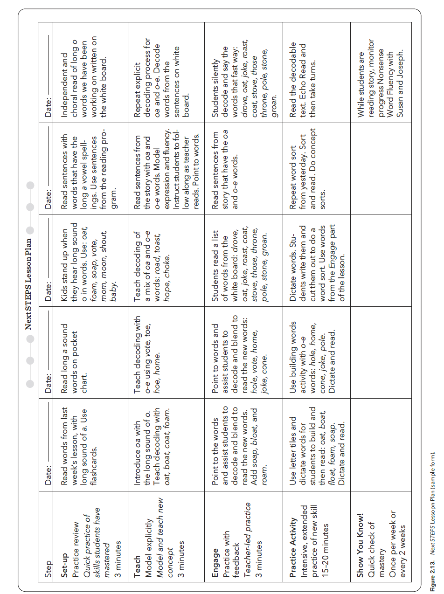
Meet Marcus — Third Grade
Marcus can sound out almost any word. His decoding accuracy is strong and he reads at appropriate speed. But when asked what a passage was about, he struggles — can't identify main ideas, make inferences, or connect to background knowledge. His vocabulary is limited.
His teacher is puzzled: "He reads so well — why can't he understand?"
What's going on with Marcus?
Where is the breakdown?
The Simple View of Reading
Marcus illustrates a foundational research framework:
Word Recognition
Decoding, sight words, phonological processing
Language Comprehension
Vocabulary, background knowledge, reasoning
Skilled Reading
Understanding text
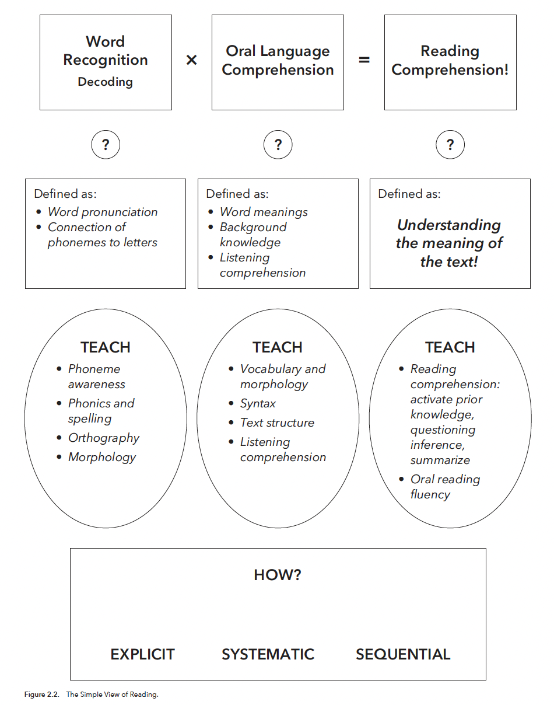
This is multiplicative. If either factor is weak, comprehension suffers — even if the other is strong. Marcus has strong word recognition but weak language comprehension.
Meet Ava — Second Grade
Ava is articulate with rich vocabulary. She discusses complex ideas verbally. But when reading, she sounds out words painfully slowly, guessing from first letters. She understands stories read to her but can't access text independently.
Where is Ava's breakdown?
Scarborough's Reading Rope
The Simple View tells us what the two factors are. Scarborough's Rope shows what's inside each:
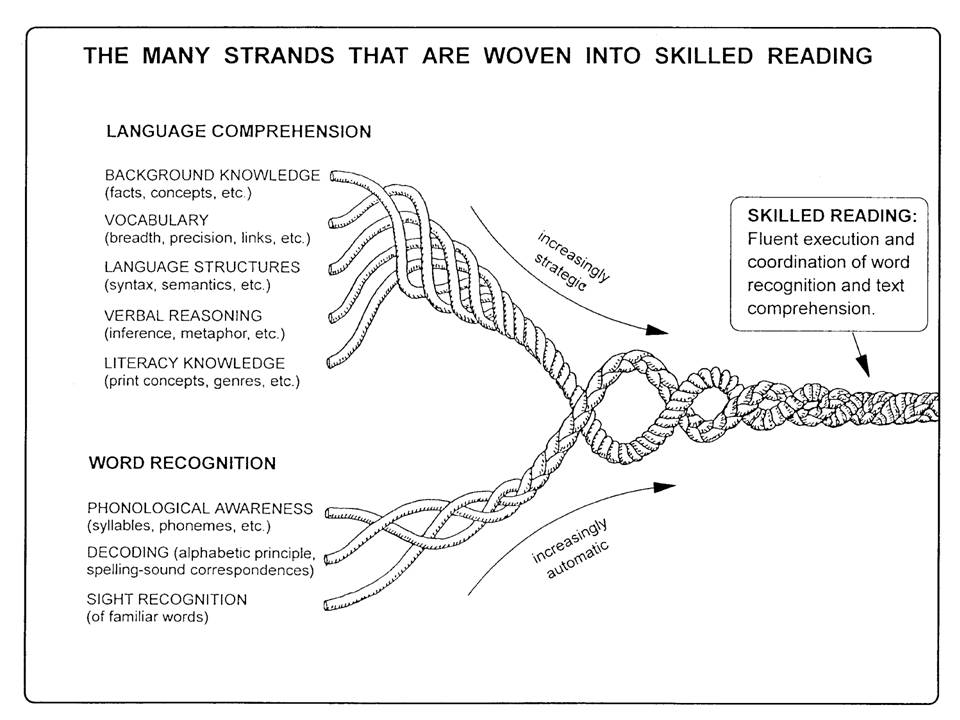
Word Recognition Strands
Become increasingly automatic:
Phonological awareness → Decoding → Sight recognition
Ava's weakness lives here.
Language Comprehension Strands
Become increasingly strategic:
Background knowledge → Vocabulary → Language structures → Verbal reasoning
Marcus's weakness lives here.
Students become skilled readers through instruction that weaves strands together. This is why Next STEPS emphasizes simultaneous, integrated instruction.
Structured Literacy: The "How"
Now we know what to look for and what's inside each component. How do we teach effectively? Through instruction that is:
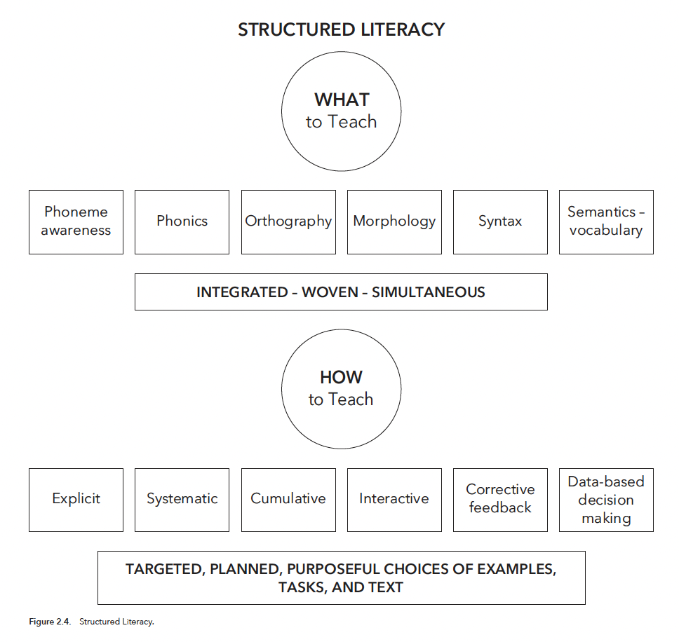
Explicit
Direct, clear — no guessing.
Systematic
Logical sequence, simple to complex.
Cumulative
New builds on what came before.
Interactive
Active student engagement.
Think of a student you've taught or observed.
Using the Simple View and Scarborough's Rope, where would you locate their difficulty?
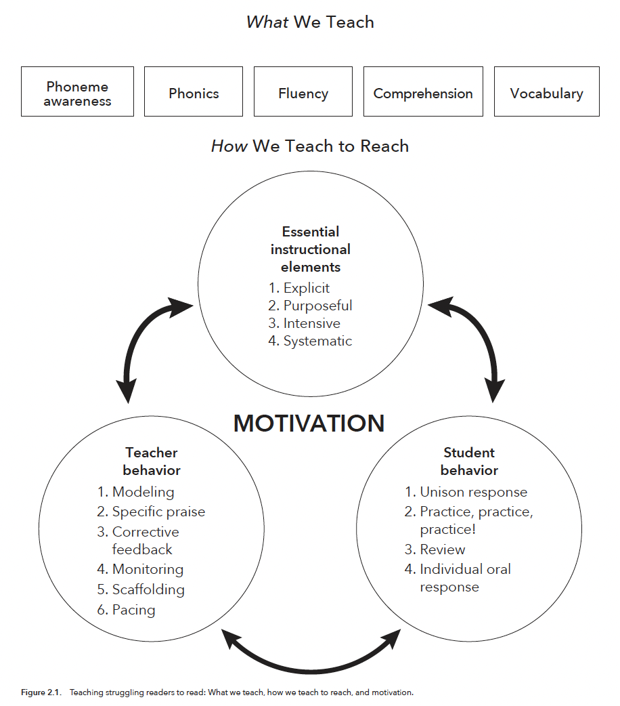
Activity: What Would You Expect to See?
Check every behavior you'd expect in an effective small-group lesson:
The Six Effective Teacher Behaviors
These aren't occasional techniques — they're the constant fabric of effective instruction.
Apply: Spot the Problem
Mr. Daniels' Guided Reading Group
Mr. Daniels works with four second-graders on the -ight pattern. He writes light, night, right, fight and tells students -ight makes /ī/ with a silent gh.
He says "Read these words to your partner." Two pairs read correctly. One student reads "light" as "lit" — his partner doesn't correct him. Mr. Daniels doesn't notice; he's preparing the next worksheet.
After partner reading, students circle -ight words on a worksheet. One asks what "might" means. Mr. Daniels says "Good question! It means 'maybe'" and moves on. At the end: "Great job today, everyone!"
What went wrong? Select all that apply.
Practice makes permanent. What students practice incorrectly becomes harder to unlearn. Monitoring and corrective feedback ensure accurate practice. Increased academic engaged time = higher learning.
Which of the six behaviors is your strongest? Which needs work?
Mr. Booker's Third-Grade Class
ORF assessment results — Accuracy (% correct) and Words Correct/min (speed):
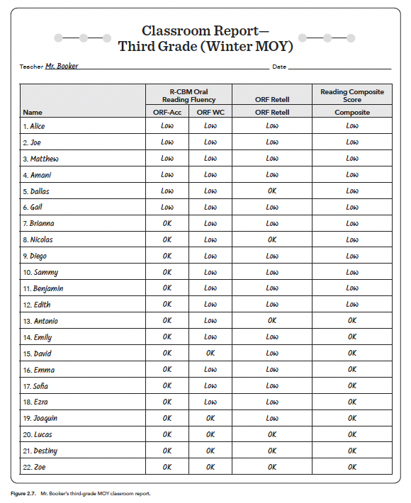
Sort these students into three instructional groups.
Which students share similar profiles?
Principles of Data-Driven Grouping
More Responses
In a group of 4, each student responds far more than in a class of 25.
Targeted Feedback
Teacher can listen to each student and provide specific correction.
Data-Informed
CBM data tells not just who needs help but what kind.
Urgency
Similar needs = efficient "catch them up" instruction.
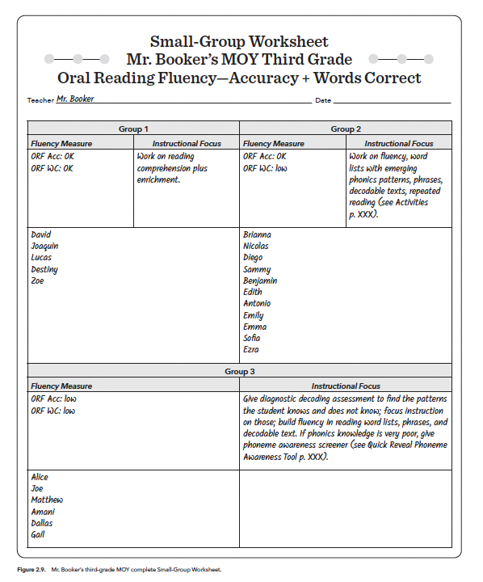
The four opening groups weren't random — they were data-driven, just like your work with Mr. Booker's class. Each group gets a different STEPS lesson targeting their specific need.
How are groups formed in your context?
Ms. Chen's Second-Grade Classroom
Four students struggle with long vowel patterns (CVCe words: make, time, hope). They read CVC words at 85–90% accuracy but drop to 40–50% on CVCe words. Language comprehension is grade-appropriate.
Today's target: reading and spelling CVCe words with a_e (make, lake, came, gave). 30 minutes.
Task 1: Identify the Breakdown
Using the Simple View, where is the breakdown?
Task 2: Plan the STEPS Lesson
Sequence these activities into STEPS order:
Task 3: Diagnose the Problem
Something Went Wrong
In "Show You Know," only 1 of 4 students spelled a_e words correctly. The others wrote CVC versions — "mak" for "make," "lak" for "lake."
Looking back, Ms. Chen modeled reading a_e words but never modeled the spelling pattern. Students practiced reading but never writing until the assessment.
Which teacher behavior was missing, and where?
Module 2 Complete
Set-up → Teach → Engage → Practice → Show You Know. From teacher-led modeling to student independence.
Simple View and Scarborough's Rope identify where the breakdown is. Data forms the groups. STEPS teaches to those needs.
Modeling, specific praise, corrective feedback, monitoring, scaffolding, and pacing make the structure come alive.
Module 3: Phonemic Awareness Instruction
Module 3 dives into the first essential component: phonemic awareness — the foundation everything else builds on.